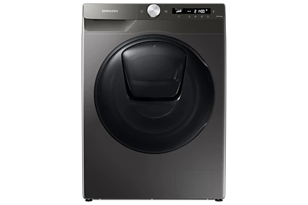
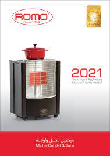
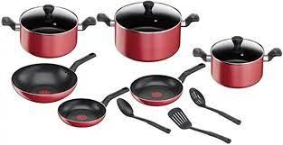
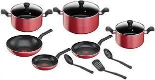
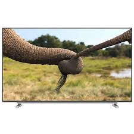

Shop online Shop online
|

أداء مبهر للفقاعات
تقنية ™Eco Bubble
استمتع بالتنظيف الفعَّال، حتى في درجات الحرارة المنخفضة*، مع تقنية Eco Bubble™. بفضل هذه التقنية، يتحول مسحوق الغسيل إلى فقاعات تخترق الأنسجة بسرعة وتزيل الاتساخات بسهولة، وفي الوقت نفسه توفر الطاقة وتحمي الألوان والأقمشة**.انعش ملابسك بالهواء
تقنية Air Wash
أنعش ملابسك بطريقة صحية دون ماء أو منظفات. تعمل تقنية Air Wash على إزالة الروائح الكريهة وتعقيم الملابس لتنعم برائحة منعشة تدوم طويلاً. وباستخدام خاصية الهواء الساخن فحسب، ستزول جميع الروائح الكريهة، وكذلك 99.9% من البكتيريا*. ومن ثَم، ليست هناك حاجة مع هذه التقنية إلى غسل الملابس في الماء المغلي، أو استخدام المواد الكيميائية المكلفة التي ربما تكون ضارة.

غسالة التحميل الأمامي/نشافة، 6/8 كغ، 1400 دورة في الدقيقة، 25 برنامج
مدفأة غاز رومو موديل جراند 3 لون أسود
أهم المميزات
3 شعلات حرارية عاكس منحني للتسخين وطهي الطعام آمنة بالكامل CE معتمدة من الاتحاد الأوربي 
تيفال طقم طهي تيمبو 12 قطعة
أهم المميزات
مقالي وأواني غير لاصقة لطهي سهل ولذيذ كل يوم Tefal Flame عبارة عن مجموعة سهلة الاستخدام مصممة لتلبية احتياجات الطبخ اليومية يتيح لك نظام Thermo-Spot معرفة درجة الحرارة المثالية لبدء الطهي ، للحصول على نتائج مثالية بسهولة تامة ، بينما يوفر طلاء Powerglide الجديد سهل التنظيف انزلاقًا إضافيًا لفترة أطول. مصمم لجعل الأجزاء السخية مليئة بالنكهة ، Flame مزود بمقبض مريح لإمساك سهل ومقبض شكل عميق لوجبات دسمة تكفي لإرضاء جميع أفراد الأسرة متوافق مع سطح الغاز والكهرباء والسيراميك
 

تلفزيون توشيبا بشاشة إل إي دي سمارت بتقنية 4K حجم 65 إنش موديل 65U5965EE لون أسود
JOD 633.000(شامل قيمة الضريبة)أهم المميزات
لعلامة التجارية: تلفزيون توشيبا النوع: LED Smart 4K الحجم: 65 بوصة نموذج: 65U5965EE لون أسود
